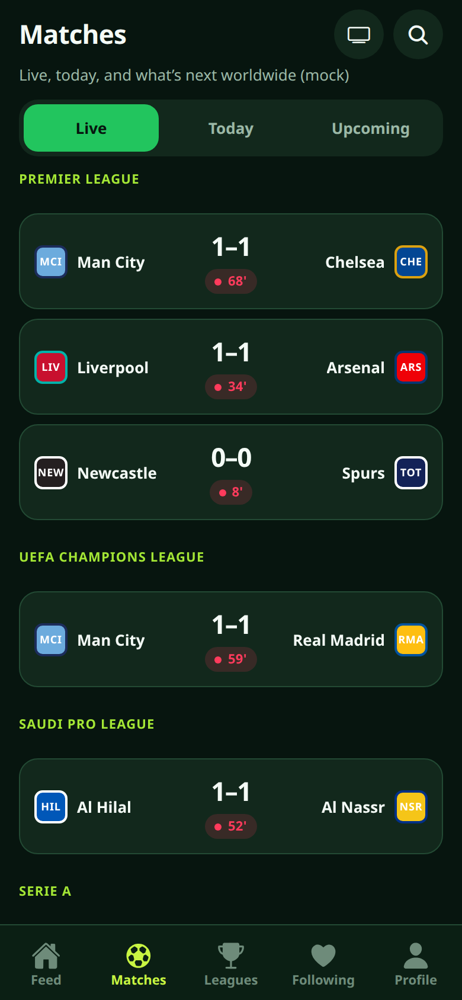
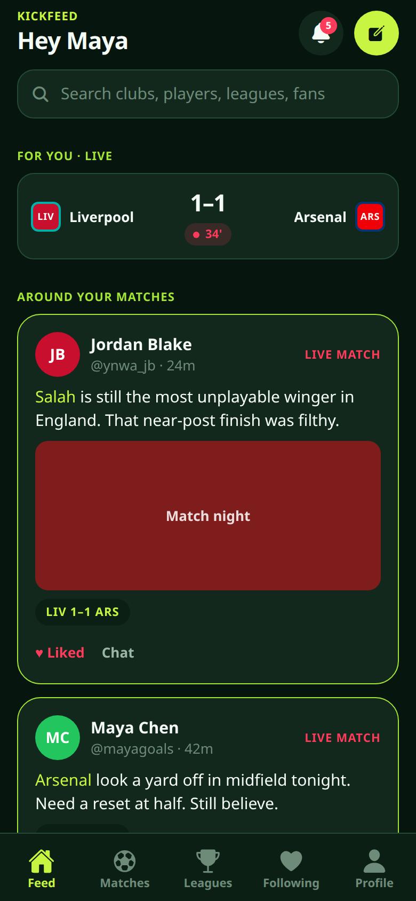

Football social + scores
Talk about the match. Watch the score. Same pitch.
Facebook-style social × FotMob-style scores — one Expo app for fans who live in both.
Follow other fans, attach a fixture to a post, and keep Live / Today / Upcoming boards next to the chatter. v1 is a local demo: seeded profiles, mock social, and mock football unless you add a free API-Football key for England.
No App Store or Play Store build yet — this is the public pitch, not a shipped store app.


What’s on the pitch
-
Match-attached feed
Post like a social app, pin a live or upcoming fixture, like and chat from the match hub.
-
Live · Today · Upcoming
FotMob-style boards, club and player pages, worldwide league tree, England live when keyed.
-
Predict + MOTM
Score picks lock at kickoff. Vote Man of the Match from lineups. Not a betting product.
-
Where to watch
Editorial TV chips for launch geos (UK, Slovakia, United States). Swap a licensed feed later.
Captured from the Expo demo
Real Expo web captures of Feed and Matches on the mock catalog — Liverpool–Arsenal chatter next to live boards.
Get in when we go wider
The Expo demo is public on GitHub today. Leave an email if you want a heads-up when KickFeed is more than a local sandbox. This form is a client-side stub — nothing is sent to a server.
Want it now? Run the Expo demo — iOS, Android, or web from the README.